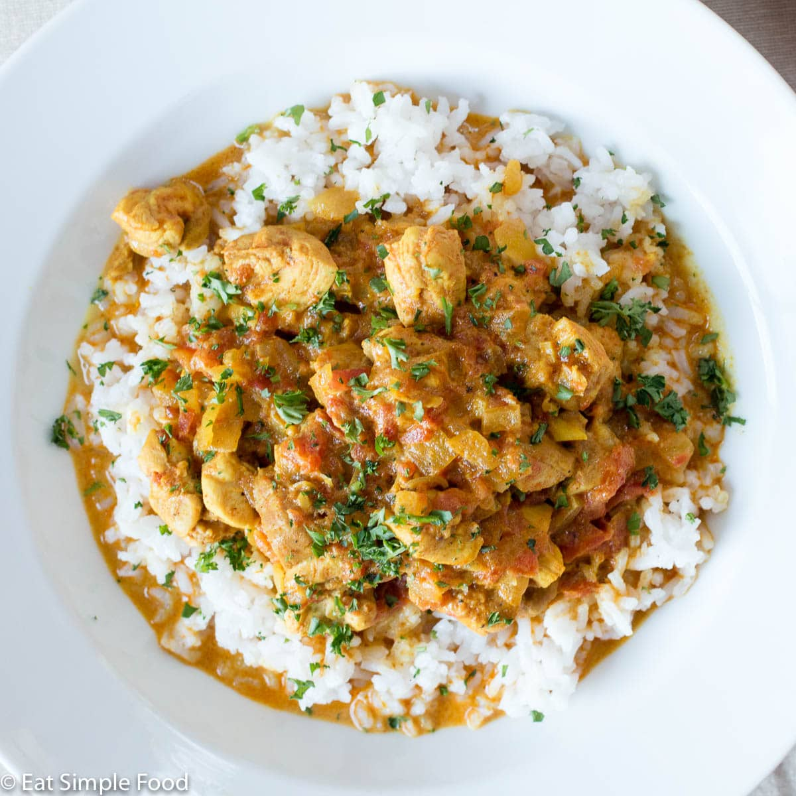

Indian Chicken Curry

Description
Chicken curry from the Indian subcontinent typically features chicken stewed in
a tomato-based sauce seasoned with aromatic spices. This recipe, like many others,
calls for curry powder (a spice blend made with coriander, turmeric, cumin, and chili powder).
Ingredients
3 tablespoons curry powder
1 teaspoon ground cinnamon
1/2 teaspoon grated fresh ginger root
2 skinless, boneless chicken breast halves- cut into bite-size piece
1 tablespoon tomato paste
1/2 teaspoon cayenne pepper
How to make Indian Chicken Curry
Step 1 - Heat olive oil in a skillet over medium heat. Saute onion until lightly browned
Step 2 - Stir in garlic, curry powder, cinnamon, paprika, bay leaf, ginger, surgar, and salt. Continue stirring for 2 minutes.
Step 3 - Add chicken pieces, tomato paste, yogurt, and coconut milk. Bring to a boil, reduce heat, and simmer for 20 and 25 minutes.
Step 4 - Remove bay leaf, and stir in lemon juice and cayenne pepper. Simmer 5 more minutes.
Step 5 - Serve hot and enjoy!